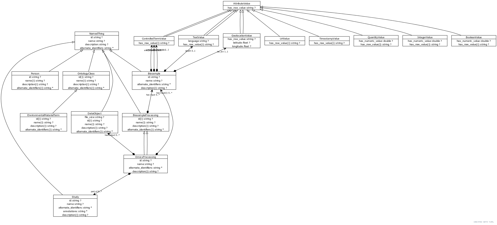

Chris Mungall
2020-05-13
(called slots in the yaml)
Example
2cm{unit: cm, value: 2}
biosample:
is_a: named thing
aliases: ['sample', 'material sample']
description: >-
A material sample. It may be environmental (encompassing many organisms) or isolate or tissue.
An environmental sample containing genetic material from multiple individuals is commonly referred to as a biosample.
slots:
- lat_lon
- depth
- env_broad_scale
- env_local_scale
- env_mediuminherits from:
data:
id: mixs
lat_lon:
aliases:
- geographic location (latitude and longitude)
description: >-
The geographical origin of the sample as defined by latitude and longitude. The values should be reported in decimal degrees and in WGS84 system
multivalued: false
is_a: attribute
range: geolocation value
mappings:
- MIxS:lat_lon
depth:
aliases:
- geographic location (depth)
description: >-
Please refer to the definitions of depth in the environmental packages
multivalued: false
is_a: attribute
range: text value
mappings:
- MIxS:depthdata:
schema:
slots:
lat_lon:
aliases:
- geographic location (latitude and longitude)
description: >-
The geographical origin of the sample as defined by latitude and longitude. The values should be reported in decimal degrees and in WGS84 system
multivalued: false
is_a: attribute
range: geolocation value
mappings:
- MIxS:lat_lon
classes:
attribute value:
description: >-
The value for any value of a attribute for a sample. This object can hold both the un-normalized atomic
value and the structured value
slots:
- has raw value
geolocation value:
is_a: attribute value
description: >-
A normalized value for a location on the earth's surface
slots:
- latitude
- longitude
slot_usage:
has raw value:
description: >-
The raw value for a geolocation should follow {lat} {long}
# to_str: {latitude} {longitude}TBD: separate biosample classes for each package?